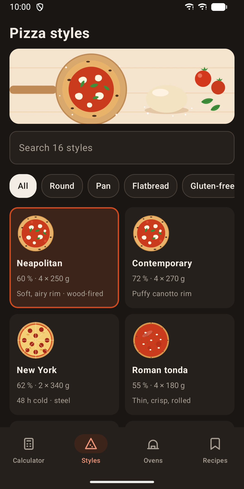

Pizza Calc: Dough Calculator
Pizza dough in grams: 16 styles, yeast for any schedule, preferments.





About
Pizza Calc turns the pizza you want into exact gram amounts. Pick a style, set the size and your fermentation schedule, and the app tells you how much flour, water, salt, yeast, oil and sugar to use. STYLES Start from one of 16 presets: Neapolitan, contemporary, New York, Roman, pinsa, teglia, Detroit, Sicilian, grandma, Chicago deep dish, tavern, New Haven, California, pan pizza, focaccia and gluten-free. Picking a style fills in the calculator with typical values and a short tip. Search and filter by round, pan, flatbread or gluten-free. BAKER'S PERCENT Set hydration, salt, oil and sugar with sliders. Make dough balls (count and weight) or pans (round or rectangular, with size and thickness). Bowl loss is added so you do not come up short. YEAST FOR YOUR SCHEDULE Enter up to six stages of hours and temperature, for example a few hours at room temperature and two days in the fridge. The app works out the yeast amount for fresh, active dry or instant yeast, or a suggested amount of sourdough starter. You can override the value by hand and go back to auto at any time. A note warns when a stage is outside the range where the model is most precise. PREFERMENTS Use a poolish, biga or starter, set its share of flour and its hydration, and get the dough split into two clear steps: the preferment and the final dough. FLOUR BLENDS AND WATER TEMPERATURE Mix up to four of 12 flour types and see the blend's strength (W) and protein. The app also suggests the water temperature for your target dough temperature, room temperature and mixing method. OVENS Choose from nine ovens, from wood-fired to home oven with steel or a kettle BBQ. See heat, preheat and bake time, and apply suggested dough changes for your oven with one tap. RECIPES Save, rename, duplicate and search your recipes. Export them to a backup file and import them again. Your current dough is saved automatically and a home-screen widget shows it at a glance. MORE Metric or imperial units, light and dark theme, English and German. Pizza Calc works fully offline. No account, no ads, no tracking. Your recipes stay on your phone.
Guides
- Pizza Dough Baker's Percentage Calculator, Worked Example Turn baker's percentages into grams of flour, water, salt, oil, sugar and yeast for any dough weight. Formula, worked example and calculator.
- Pizza Dough Water Temperature Calculator and Formula How warm should the water be for pizza dough? The formula, friction values by mixer, a worked example and a small calculator.